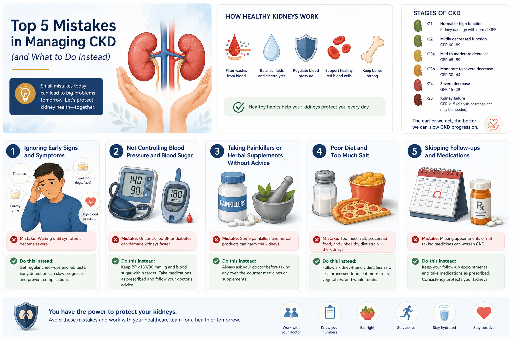
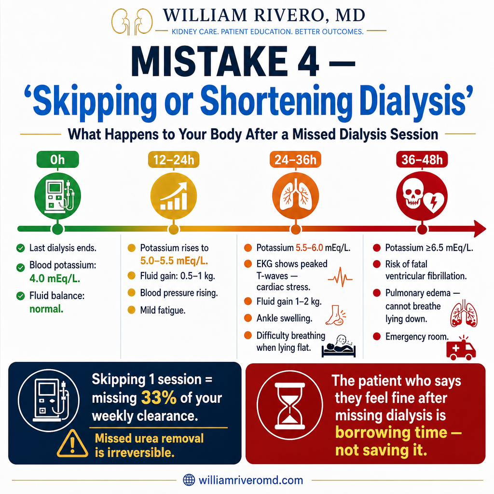
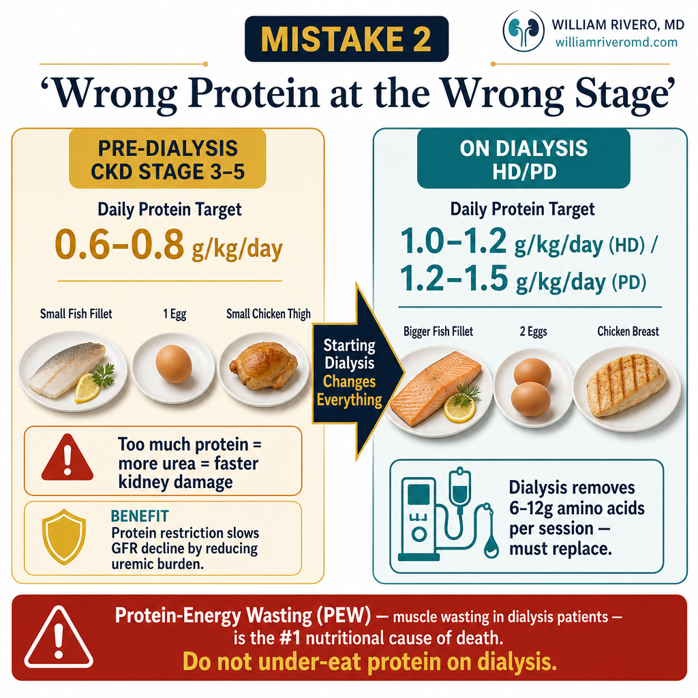
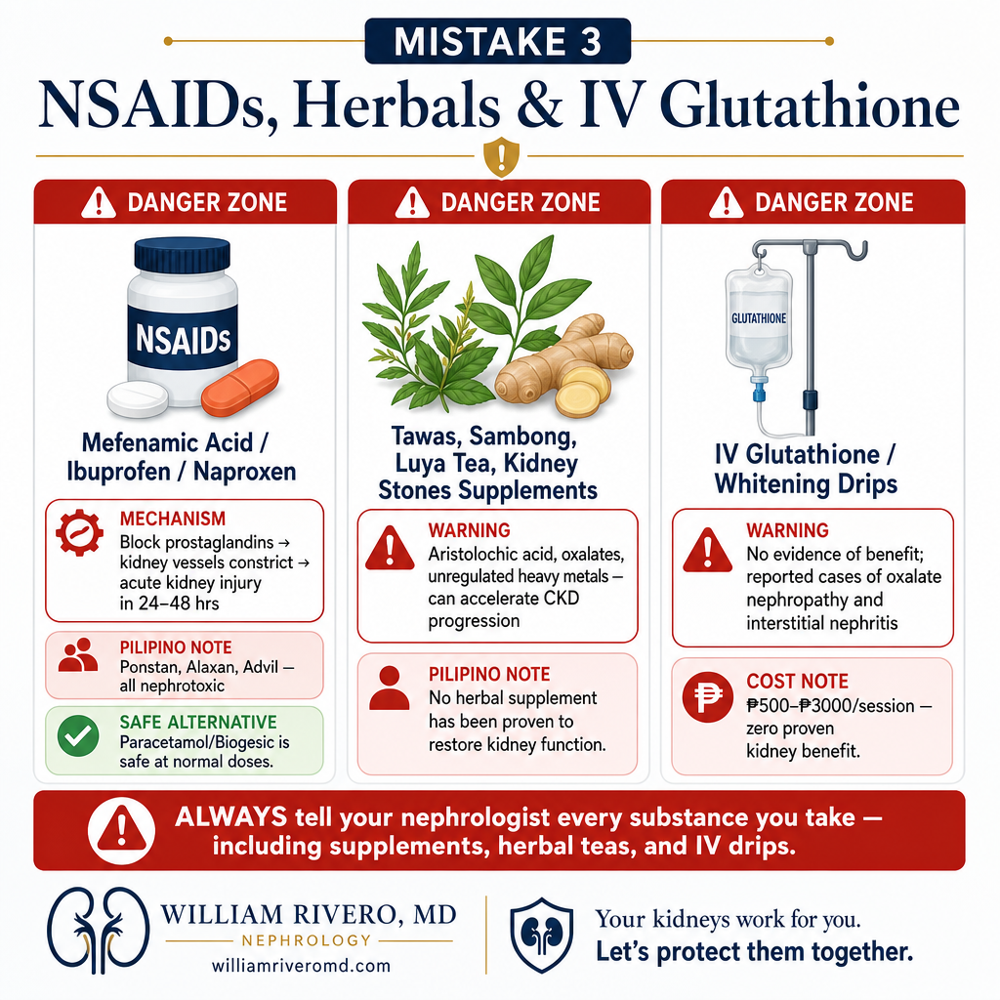
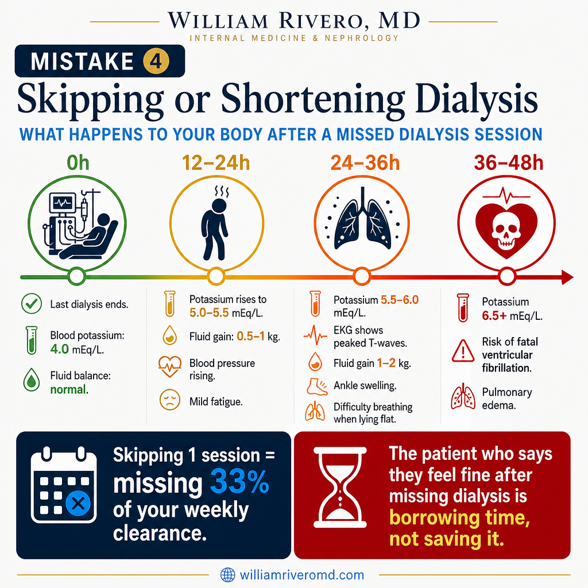
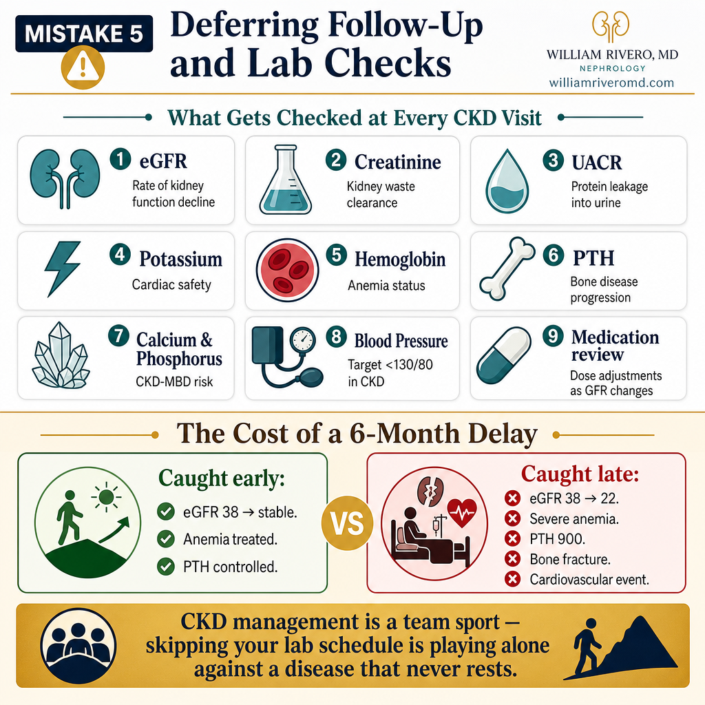

CKD Progresses Silently — Until It Doesn'tE CKD Makalakad Yang Patingtalung — Anggang E Na Tahimik na Sumusulong ang CKD — Hanggang Sa Hindi Na Hilom nga Nagauswag ang CKD — Hangtod Dili Na
In over a decade of nephrology practice, I have seen the same preventable mistakes cause the same preventable harm — over and over. A patient who was doing well accelerates to dialysis in two years instead of ten. A dialysis patient who was stable is admitted to the emergency room. In almost every case, the root cause was something that could have been caught and corrected at a routine clinic visit.
This guide is not about blame. It is about information. Every mistake in this list made complete sense to the patient who made it. Understanding the biology makes it possible to do better.Sa mahigit isang dekada ng praktis sa nefrolohiya, nakita ko ang parehong mga mapigilan na pagkakamali na nagdudulot ng parehong mapigilan na pinsala — nang paulit-ulit. Ang isang pasyenteng maayos ang kalagayan ay mabilis na napupunta sa dialysis sa loob ng dalawang taon sa halip na sampu. Ang isang pasyenteng nasa dialysis at matatag ay na-admit sa emergency room. Sa halos bawat kaso, ang ugat ng dahilan ay isang bagay na maaaring nakita at naiwasto sa isang karaniwang bisita sa klinika.
Ang gabay na ito ay hindi tungkol sa sisi. Ito ay tungkol sa impormasyon. Ang bawat pagkakamali sa listahang ito ay may lubos na katuwirang naiintindihan ng pasyenteng gumawa nito. Ang pag-unawa sa biyolohiya ay nagpapahintulot sa atin na gumawa nang mas mabuti.Sa sobra sa usa ka dekada sa praktis sa nefrolohiya, nakita nako ang parehas nga mga mapugngan nga sayop nga nagdulot sa parehas nga mapugngan nga kadaot — pag-usab-usab. Ang usa ka pasyente nga maayo ang kahimtang nagpadali sa dialysis sa duha ka tuig imbes sa napulo. Ang usa ka pasyente sa dialysis nga estable gipasakop sa emergency room. Sa halos matag kaso, ang gamot sa kagikan mao ang butang nga mahimong makita ug matul-id sa usa ka naandan nga pagbisita sa klinika.
Kining giya dili bahin sa saway. Bahin kini sa impormasyon. Ang matag sayop sa listahan nakasabot ang pasyente nga naghimo niini. Ang pagsabut sa biyolohiya naghimo'g posible nga mahimong mas maayo.


This is the most common mistake I see in nephrology practice, and it is the most understandable. A patient takes losartan every day for three months, feels no different from before, decides the medication isn't doing anything, and stops. What they don't feel is the microscopic damage quietly unfolding — elevated intraglomerular pressure grinding down nephrons one by one, proteinuria worsening silently, the GFR dropping a few points per year that will eventually add up to dialysis.Ito ang pinaka-karaniwang pagkakamali na nakikita ko sa praktis ng nefrolohiya, at ito ang pinaka-naiintindihan. Ang isang pasyente ay umiinom ng losartan araw-araw sa loob ng tatlong buwan, hindi nakakaramdam ng pagbabago, nagpapasya na ang gamot ay walang ginagawa, at humihinto. Hindi nila nararamdaman ang mikroskopikong pinsala na tahimik na nangyayari — ang mataas na presyon sa loob ng glomerulo na dahan-dahang sinisira ang mga nephron isa-isa, ang proteinuria na tahimik na lumalala, ang GFR na bumababa ng ilang puntos bawat taon na sa kalaunan ay magreresulta sa dialysis.Kini ang labing kasagaran nga sayop nga akong nakita sa praktis sa nefrolohiya, ug mao kini ang labing masabtan. Ang usa ka pasyente naginom og losartan adlaw-adlaw sulod sa tulo ka buwan, wala makamatikod og pagbag-o, nakahunahuna nga ang tambal walay epekto, ug mohunong. Dili nila mabatyagan ang mikroskopikong kadaot nga hilom nga nagahitabo — ang taas nga presyon sulod sa glomerulo nga nagaunsa sa mga nephron usa-usa, ang proteinuria nga hilom nga nagkagrabe, ang GFR nga mikunhod og pipila ka punto matag tuig nga sa katapusan mosangpot sa dialysis.
Why You Don't Feel the Medications Working — The BiologyBakit Hindi Ninyo Nararamdaman ang Paggana ng mga Gamot — Ang BiyolohiyaNgano Dili Ninyo Mabatyagan ang Pagtrabaho sa mga Tambal — Ang Biyolohiya
Your kidneys have no pain receptors. Damage to glomeruli, scarring of tubules, and rising proteinuria are completely painless. RAAS blockers (losartan, valsartan, perindopril) work by reducing intraglomerular hypertension — a pressure inside the kidney's filtering units that you cannot feel. When the drug is working, your kidneys are quietly preserved. When you stop it, the damage quietly accelerates. The absence of symptoms is not evidence that the medication isn't needed — it is evidence that it is working.Ang inyong mga bato ay walang mga pain receptor. Ang pinsala sa glomeruli, pag-ukit ng mga tubulo, at pagtaas ng proteinuria ay ganap na walang sakit. Ang mga RAAS blocker (losartan, valsartan, perindopril) ay gumagana sa pamamagitan ng pagbabawas ng intraglomerular hypertension — isang presyon sa loob ng mga filtering unit ng bato na hindi ninyo mararamdaman. Kapag gumagana ang gamot, ang inyong mga bato ay tahimik na napapanatili. Kapag inihinto ninyo ito, ang pinsala ay tahimik na napabibilis. Ang kawalan ng mga sintomas ay hindi katibayan na hindi na kailangan ang gamot — ito ay katibayan na gumagana ito.Ang imong mga kidney walay mga pain receptor. Ang kadaot sa glomeruli, pag-ukit sa mga tubulo, ug pagtaas sa proteinuria hingpit nga walay sakit. Ang mga RAAS blocker (losartan, valsartan, perindopril) nagtrabaho pinaagi sa pagpahubas sa intraglomerular hypertension — usa ka presyon sulod sa mga filtering unit sa kidney nga dili ninyo mabatyagan. Kung nagtrabaho ang tambal, ang imong mga kidney hilom nga napanalipdan. Kung ihunong ninyo kini, ang kadaot hilom nga nagpadali. Ang kakulang sa mga sintomas dili ebidensya nga dili na kinahanglan ang tambal — ebidensya kini nga nagtrabaho kini.
Stopping RAAS blockersPaghihinto ng RAAS blockersPaghunong sa RAAS blockers
Intraglomerular hypertension resumes → proteinuria rises → glomerulosclerosis accelerates → 2–3× faster GFR decline.Muling bumabalik ang intraglomerular hypertension → tumataas ang proteinuria → nagbibilis ang glomerulosclerosis → 2–3× mas mabilis na pagbaba ng GFR.Mibalik ang intraglomerular hypertension → mitaas ang proteinuria → mipadali ang glomerulosclerosis → 2–3× mas paspas nga pagkunhod sa GFR.
Stopping statinsPaghihinto ng mga statinPaghunong sa mga statin
CKD patients have 5–10× higher cardiovascular mortality. Statins reduce this. Stopping them restores the cardiovascular risk that makes CKD patients die from heart attacks — not kidney failure.Ang mga pasyenteng CKD ay may 5–10× na mas mataas na cardiovascular mortality. Ang mga statin ay nagpapababa nito. Ang paghihinto sa kanila ay nagbabalik ng cardiovascular risk na nagpapamatay sa mga pasyenteng CKD mula sa heart attack — hindi kidney failure.Ang mga pasyente nga CKD adunay 5–10× nga mas taas nga cardiovascular mortality. Ang mga statin nagpakubos niini. Ang paghunong kanila nagbalik sa cardiovascular risk nga nagpamatay sa mga pasyente nga CKD gikan sa heart attack — dili kidney failure.
Stopping phosphate bindersPaghihinto ng mga phosphate binderPaghunong sa mga phosphate binder
Phosphorus rebounds within 24 hours of stopping. PTH rises within days. Vascular calcification — the process that stiffens arteries and kills dialysis patients — restarts and is irreversible.Ang phosphorus ay mabilis na bumabalik sa loob ng 24 oras pagkatapos huminto. Ang PTH ay tumataas sa loob ng ilang araw. Ang vascular calcification — ang prosesong nagpapatigas ng mga arterya at pumapatay sa mga pasyenteng nasa dialysis — ay muling nagsisimula at hindi na mapapalitan.Ang phosphorus mibalik sulod sa 24 oras human mohunong. Ang PTH mitaas sulod sa pipila ka adlaw. Ang vascular calcification — ang proseso nga nagpatig-a sa mga arterya ug nagpamatay sa mga pasyente sa dialysis — misugod pag-usab ug dili na mabawi.
"Doc, I already feel well naman — do I still really need to take all of these?" — heard in every CKD clinic, every week."Doc, okay na naman ang pakiramdam ko — kailangan ko pa bang inumin ang lahat ng ito?" — naririnig sa bawat CKD clinic, tuwing linggo."Doc, okay na man ang akong gibati — kinahanglan ko pa bang inumon kining tanan?" — nadunggan sa matag CKD clinic, matag semana.
✓ What To Do InsteadAno ang Dapat Gawin sa HalipUnsa ang Buhaton sa Baylo
- If you feel a medication is unnecessary, ask your nephrologist before stopping — not after. There is almost always an explanation for why each drug is prescribed.Kung sa palagay ninyo ay hindi na kailangan ang isang gamot, tanungin ang inyong nephrologist bago humihinto — hindi pagkatapos. Halos palaging may paliwanag kung bakit inirereseta ang bawat gamot.Kung gibati ninyo nga dili na kinahanglan ang usa ka tambal, pangutan-a ang imong nephrologist sa wala pa mohunong — dili pagkahuman. Halos kanunay adunay paliwanag kung ngano giresetahan ang matag tambal.
- If you cannot afford a medication, tell your doctor. Generic substitutes, PCSO assistance, and pharmaceutical patient programs exist. Stopping silently is the worst option.Kung hindi kaya ng inyong badyet ang isang gamot, sabihin sa inyong doktor. May mga generic na kapalit, tulong ng PCSO, at mga programa para sa pasyente ng mga pharmaceutical company. Ang tahimik na paghihinto ay ang pinakamasamang pagpipilian.Kung dili kaya ang gastos sa usa ka tambal, suginlan ang imong doktor. Adunay mga generic nga kahulugan, tabang sa PCSO, ug mga programa alang sa pasyente sa mga pharmaceutical company. Ang hilom nga paghunong mao ang pinakadaotan nga kapilian.
- If you are experiencing side effects, report them at your next visit. Most side effects have solutions: a dose reduction, a timing change, or a substitution. Stopping without reporting means the problem goes unsolved.Kung nakakaranas kayo ng mga side effect, iulat ito sa inyong susunod na pagbisita. Karamihan sa mga side effect ay may solusyon: pagbabawas ng dosis, pagbabago ng oras, o pagpapalit. Ang paghihinto nang hindi nag-uulat ay nangangahulugang hindi nareresolba ang problema.Kung nakasinati kamo og mga side effect, ireport kini sa imong sunod nga pagbisita. Kadaghanan sa mga side effect adunay solusyon: pagkubos sa dosis, pagbag-o sa oras, o pagbaylo. Ang paghunong nga wala mag-report nagpasabot nga dili masulbad ang problema.
- Keep a medication card with every drug, dose, and the one-sentence reason you are taking it. When you understand why each medication exists, it is far easier to take it consistently.Mag-ingat ng medication card na may bawat gamot, dosis, at isang pangungusap na dahilan kung bakit ito iniinom. Kapag naiintindihan ninyo kung bakit umiiral ang bawat gamot, mas madaling inumin ito nang tuluy-tuloy.Magpadayon og medication card nga adunay matag tambal, dosis, ug usa ka sentensya nga rason kung ngano kini giinom. Kung masabtan ninyo kung ngano naa ang matag tambal, mas dali kining iinom nga padayon.

Protein management in CKD is the most counterintuitive nutritional rule in medicine — and the most commonly violated. In the months before starting dialysis, patients are told to restrict protein. Many of them correctly follow this advice. Then they start dialysis — and nobody clearly explains that the rules have completely changed. They continue their pre-dialysis protein restriction on hemodialysis. Muscle mass disappears. Albumin falls. Mortality triples.Ang pamamahala ng protina sa CKD ay ang pinaka-kontraintuwisyon na panuntunan sa nutrisyon sa medisina — at ang pinaka-karaniwang nilalabag. Sa mga buwan bago magsimula ng dialysis, sinabihan ang mga pasyente na bawasan ang protina. Marami sa kanila ang wastong sumusunod sa payo na ito. Pagkatapos ay nagsisimula sila ng dialysis — at walang malinaw na nagpapaliwanag na ang mga patakaran ay ganap na nagbago. Patuloy nilang ginagawa ang kanilang pre-dialysis protein restriction habang nasa hemodialysis. Nawawala ang muscle mass. Bumababa ang albumin. Tatlong beses na tumataas ang mortality.Ang pagdumala sa protina sa CKD mao ang pinaka-kontraintuwisyon nga lagda sa nutrisyon sa medisina — ug ang labing kasagaran nga gilapas. Sa mga buwan sa wala pa magsugod sa dialysis, gisultihan ang mga pasyente nga limitahan ang protina. Daghan kanila ang husto nga misunod niini nga tambag. Unya misugod sila sa dialysis — ug walay malinaw nga nagpasabot nga ang mga lagda hingpit nga nabag-o. Nagpadayon sila sa ilang pre-dialysis protein restriction sa hemodialysis. Nawala ang muscle mass. Mikunhod ang albumin. Mitulo ang mortality.
The Biology: Why the Rules Flip at DialysisAng Biyolohiya: Bakit Nagbabago ang mga Patakaran sa DialysisAng Biyolohiya: Ngano Nagbag-o ang mga Lagda sa Dialysis
Pre-dialysis: Protein metabolism produces urea and uremic toxins. A damaged kidney cannot clear these efficiently — they accumulate and poison the body. Dietary protein restriction (0.6–0.8 g/kg/day) reduces the uremic burden and measurably slows GFR decline.
At dialysis: Every hemodialysis session removes 6–12 grams of amino acids directly from the bloodstream into the drain. Every peritoneal dialysis exchange loses 5–15 grams of protein through the peritoneal membrane. These losses are continuous and unavoidable. Without adequate protein replacement (1.0–1.2 g/kg/day for HD; 1.2–1.5 g/kg/day for PD), the body cannibalizes its own muscle mass — a process called protein-energy wasting (PEW), the leading nutritional cause of death in dialysis patients.Pre-dialysis: Ang metabolismo ng protina ay gumagawa ng urea at mga uremic toxin. Hindi mahusay na naililinis ng sirang bato ang mga ito — nag-iipon ang mga ito at nakakalason sa katawan. Ang pagbabawas ng protina sa pagkain (0.6–0.8 g/kg/araw) ay nagpapababa ng uremic burden at malinaw na nagpapabagal ng pagbaba ng GFR.
Sa dialysis: Ang bawat sesyon ng hemodialysis ay nag-aalis ng 6–12 gramo ng mga amino acid nang direkta mula sa daluyan ng dugo patungo sa drain. Ang bawat palitan ng peritoneal dialysis ay nawawalan ng 5–15 gramo ng protina sa pamamagitan ng peritoneal membrane. Ang mga pagkaluging ito ay tuluy-tuloy at hindi maiiwasan. Kung walang sapat na kapalit na protina (1.0–1.2 g/kg/araw para sa HD; 1.2–1.5 g/kg/araw para sa PD), kinakain ng katawan ang sarili nitong muscle mass — isang prosesong tinatawag na protein-energy wasting (PEW), ang nangungunang sanhi ng nutrisyonal na kamatayan sa mga pasyenteng nasa dialysis.Pre-dialysis: Ang metabolismo sa protina nagprodukte og urea ug mga uremic toxin. Ang sirang kidney dili mahusay nga makapahinaw niini — nagtipon ang mga ito ug nakalason sa lawas. Ang pagkubos sa protina sa pagkaon (0.6–0.8 g/kg/adlaw) nagpakubos sa uremic burden ug tin-aw nga nagpahinay sa pagkunhod sa GFR.
Sa dialysis: Ang matag sesyon sa hemodialysis nagkuha og 6–12 gramo sa mga amino acid direkta gikan sa dugo paingon sa drain. Ang matag pagbaylo sa peritoneal dialysis nawad-an og 5–15 gramo sa protina pinaagi sa peritoneal membrane. Kining mga pagkawala padayon ug dili mapugngan. Kung walay igo nga kapalit nga protina (1.0–1.2 g/kg/adlaw para sa HD; 1.2–1.5 g/kg/adlaw para sa PD), gikaon sa lawas ang kaugalingong muscle mass — usa ka proseso nga gitawag og protein-energy wasting (PEW), ang nanguna nga sanag sa nutrisyon nga hinungdan sa kamatayon sa mga pasyente sa dialysis.
Too much protein (pre-dialysis)Masyadong maraming protina (pre-dialysis)Sobra ka daghang protina (pre-dialysis)
Urea accumulates → uremic symptoms worsen → GFR declines 2× faster → earlier dialysis initiation.Nag-iipon ang urea → lumalala ang mga uremic na sintomas → bumababa ang GFR nang 2× mas mabilis → mas maaga na pagsisimula ng dialysis.Nagtipon ang urea → nagkagrabe ang mga uremic nga sintomas → mikunhod ang GFR nang 2× mas paspas → mas sayo nga pagsugod sa dialysis.
Too little protein (on dialysis)Napakakaunting protina (nasa dialysis)Gamay ra kaayong protina (sa dialysis)
Protein-energy wasting → muscle loss → albumin <3.5 g/dL → 3× higher mortality → infections, falls, hospitalizations.Protein-energy wasting → pagkawala ng muscle → albumin <3.5 g/dL → 3× na mas mataas na mortality → mga impeksyon, pagkahulog, pag-ospital.Protein-energy wasting → pagkawala sa muscle → albumin <3.5 g/dL → 3× nga mas taas nga mortality → mga impeksyon, pagkahulog, pag-ospital.
The most dangerous transition: starting dialysis without updating your dietAng pinaka-mapanganib na paglipat: pagsisimula ng dialysis nang hindi ina-update ang diyetaAng labing delikadong transisyon: pagsugod sa dialysis nga wala i-update ang diyeta
When a patient starts hemodialysis after years of protein restriction, nobody hands them a new meal plan at the dialysis center door. The old habit continues. By the time low albumin is flagged on labs — typically 3–6 months later — significant muscle mass has already been lost. If you have recently started dialysis and have not received an updated dietary prescription from a renal dietitian, ask for one at your next session.Kapag nagsimula ang isang pasyente ng hemodialysis pagkatapos ng maraming taon ng pagbabawas ng protina, walang nagbibigay sa kanila ng bagong meal plan sa pintuan ng dialysis center. Nagpapatuloy ang lumang gawi. Sa oras na mapansin ang mababang albumin sa mga lab — karaniwang 3–6 buwan ang lumipas — malaking bahagi ng muscle mass ay nawala na. Kung kamakailan lang kayong nagsimula ng dialysis at hindi pa nakatanggap ng updated na dietary prescription mula sa renal dietitian, humingi ng isa sa inyong susunod na sesyon.Kung ang usa ka pasyente magsugod sa hemodialysis human sa daghang tuig nga pagkubos sa protina, walay naghatag kanila og bag-ong meal plan sa pultahan sa dialysis center. Nagpadayon ang daan nga batasan. Sa panahon nga mapansin ang ubos nga albumin sa mga lab — kasagarang 3–6 buwan ang milabay — daghan na nga muscle mass ang nawala. Kung bag-o ra kamo nagsugod sa dialysis ug wala pa makadawat og updated nga dietary prescription gikan sa renal dietitian, pangayo og usa sa imong sunod nga sesyon.
✓ The Simple Rules by StageAng Simpleng mga Patakaran ayon sa YugtoAng Simpleng mga Lagda base sa Stage
- CKD Stage 1–3a: 0.8 g protein/kg/day — standard healthy adult intake. No restriction needed yet.CKD Stage 1–3a: 0.8 g protina/kg/araw — pamantayang paggamit ng malusog na matanda. Hindi pa kailangan ng pagbabawas.CKD Stage 1–3a: 0.8 g protina/kg/adlaw — pamantayan nga paggamit sa malusog nga hamtong. Wala pay kinahanglang pagkubos.
- CKD Stage 3b–5 (pre-dialysis): 0.6–0.8 g/kg/day — restrict to reduce uremic toxin production and slow decline.CKD Stage 3b–5 (pre-dialysis): 0.6–0.8 g/kg/araw — bawasan upang mabawasan ang produksyon ng uremic toxin at mapabagal ang pagbaba.CKD Stage 3b–5 (pre-dialysis): 0.6–0.8 g/kg/adlaw — limitahan aron makubus ang produksyon sa uremic toxin ug mapahinay ang pagkunhod.
- Hemodialysis: 1.0–1.2 g/kg/day — increase substantially. At least half from high biological value sources (egg whites, lean chicken, fish, tofu).Hemodialysis: 1.0–1.2 g/kg/araw — dagdagan nang malaki. Hindi bababa sa kalahati mula sa mga mapagkukunan ng mataas na biological value (puti ng itlog, payat na manok, isda, tofu).Hemodialysis: 1.0–1.2 g/kg/adlaw — padakoa og dako. Labing menos katunga gikan sa mga tinubdan nga adunay taas nga biological value (puti sa itlog, nipis nga manok, isda, tofu).
- Peritoneal dialysis: 1.2–1.5 g/kg/day — highest CKD requirement. Peritoneal losses are continuous.Peritoneal dialysis: 1.2–1.5 g/kg/araw — pinakamataas na pangangailangan sa CKD. Ang mga pagkalugi sa peritoneal ay tuluy-tuloy.Peritoneal dialysis: 1.2–1.5 g/kg/adlaw — pinakataas nga kinahanglanon sa CKD. Ang mga pagkawala sa peritoneal padayon.
- If you are unsure which category applies to you right now, ask your nephrologist at your next visit: "What is my current protein target in grams per day?"Kung hindi kayo sigurado kung aling kategorya ang naaangkop sa inyo ngayon, tanungin ang inyong nephrologist sa susunod na pagbisita: "Ano ang aking kasalukuyang protein target sa gramo bawat araw?"Kung dili kamo sigurado kung unsang kategorya ang angay kaninyo karon, pangutan-a ang imong nephrologist sa sunod nga pagbisita: "Unsa ang akong karon nga protein target sa gramo matag adlaw?"

A patient with CKD Stage 3 gets a headache. They take mefenamic acid — available without prescription at every Mercury Drug, and used so commonly that patients don't consider it "a medication" at all. Three days later, their creatinine has jumped from 2.1 to 4.8. They are admitted for acute kidney injury superimposed on chronic kidney disease. Some recover. Many don't — and emerge from that hospitalization at a permanently lower GFR, closer to dialysis than they were a week before.Ang isang pasyenteng may CKD Stage 3 ay nagkasakit ng ulo. Uminom siya ng mefenamic acid — available nang walang reseta sa bawat Mercury Drug, at ginagamit nang napaka-karaniwan anupat hindi ito itinuturing ng mga pasyente bilang "gamot" sa lahat. Tatlong araw ang lumipas, tumalon ang kanilang creatinine mula 2.1 hanggang 4.8. Natanggap sila sa ospital para sa acute kidney injury na nakapatong sa chronic kidney disease. Ang ilan ay gumagaling. Marami ang hindi — at lumalabas sa ospitalisasyong iyon na may permanenteng mas mababang GFR, mas malapit sa dialysis kaysa noong nakaraang linggo.Ang usa ka pasyente nga adunay CKD Stage 3 nagsakit og ulo. Miinom siya og mefenamic acid — available nga walay reseta sa matag Mercury Drug, ug gigamit nga kasagaran kaayo mao nga wala kini giisip sa mga pasyente nga "tambal" sa tanan. Tulo ka adlaw ang milabay, milukso ang ilang creatinine gikan sa 2.1 hangtod 4.8. Gi-admit sila para sa acute kidney injury nga gipanag-iyahan sa chronic kidney disease. Ang uban naayo. Daghan dili — ug migawas gikan nianang pag-ospital nga adunay permanenteng mas ubos nga GFR, mas duol sa dialysis kaysa miaging semana.
Why NSAIDs Are Uniquely Dangerous in CKD — The PhysiologyBakit Natatanging Mapanganib ang NSAIDs sa CKD — Ang PisyolohiyaNgano Natatanging Delikado ang NSAIDs sa CKD — Ang Pisyolohiya
In a healthy kidney, blood flow to the glomeruli is regulated partly by prostaglandins — locally produced hormones that dilate the afferent arteriole (the vessel bringing blood in). In CKD, this prostaglandin-dependent blood flow regulation becomes critically important, because the damaged kidney already operates under reduced perfusion pressure.
NSAIDs (mefenamic acid, ibuprofen, naproxen, diclofenac, ketorolac, meloxicam, celecoxib) block prostaglandin synthesis. In a CKD kidney, this abruptly removes the compensatory vasodilation that was maintaining GFR. Blood flow to the glomeruli drops. GFR falls. Creatinine rises. The kidney, which had no reserve, tips into acute injury — and each acute injury episode permanently destroys additional nephrons that will never recover.Sa isang malusog na bato, ang daloy ng dugo sa mga glomeruli ay bahagyang kinokontrol ng mga prostaglandin — mga lokal na ginawang hormone na nagpapalawak ng afferent arteriole (ang sisidlan na nagdadala ng dugo papasok). Sa CKD, ang regulasyong ito ng daloy ng dugo na nakasalalay sa prostaglandin ay nagiging kritikal na mahalaga, dahil ang sirang bato ay tumatakbo na sa ilalim ng nabawasang presyon ng perfusion.
Ang mga NSAID (mefenamic acid, ibuprofen, naproxen, diclofenac, ketorolac, meloxicam, celecoxib) ay humahadlang sa synthesis ng prostaglandin. Sa CKD na bato, ito ay biglang nag-aalis ng compensatory vasodilation na nagpapanatili ng GFR. Bumababa ang daloy ng dugo sa mga glomeruli. Bumababa ang GFR. Tumataas ang creatinine. Ang bato, na wala nang reserbang kapasidad, ay nagtitip sa acute injury — at ang bawat episode ng acute injury ay permanenteng sumisira ng karagdagang mga nephron na hindi na mababawi.Sa usa ka maayo nga kidney, ang daloy sa dugo ngadto sa mga glomeruli gituhay sa bahin sa mga prostaglandin — mga lokal nga gihimo nga hormone nga nagpadako sa afferent arteriole (ang sisidlan nga nagdala sa dugo padulong). Sa CKD, kining regulasyon sa daloy sa dugo nga nagsalig sa prostaglandin nahimong kritikal nga mahinungdanon, tungod kay ang sirang kidney nagtrabaho na sa ilalim sa gikunhorang presyon sa perfusyon.
Ang mga NSAID (mefenamic acid, ibuprofen, naproxen, diclofenac, ketorolac, meloxicam, celecoxib) nagbabag sa synthesis sa prostaglandin. Sa CKD nga kidney, kini kalit nga nagkuha sa compensatory vasodilation nga nagpadayon sa GFR. Mikunhod ang daloy sa dugo ngadto sa mga glomeruli. Mikunhod ang GFR. Mitaas ang creatinine. Ang kidney, nga walay reserbang kapasidad, natumba ngadto sa acute injury — ug ang matag episode sa acute injury permanenteng naglaglag og dugang mga nephron nga dili na mobalik.
NSAIDs (mefenamic acid, ibuprofen)NSAIDs (mefenamic acid, ibuprofen)NSAIDs (mefenamic acid, ibuprofen)
Acute kidney injury within 24–72 hours. Each episode permanently reduces residual function. Even short courses cause measurable harm in CKD Stage 3+.Acute kidney injury sa loob ng 24–72 oras. Ang bawat episode ay permanenteng nagbabawas ng natitirang function. Kahit maikling kurso ay nagdudulot ng nasusukat na pinsala sa CKD Stage 3+.Acute kidney injury sulod sa 24–72 oras. Ang matag episode permanenteng nagkubos sa nahabilin nga function. Bisan mubo nga kurso nagdulot og masukod nga kadaut sa CKD Stage 3+.
Herbal supplementsMga herbal na supplementMga herbal nga supplement
Aristolochic acid (some Chinese herbs), star fruit (carambola), tawatawa — cause acute tubular necrosis, interstitial nephritis, or fatal hyperkalemia. "Natural" does not mean safe for damaged kidneys.Aristolochic acid (ilang Chinese herbs), star fruit (carambola), tawatawa — nagdudulot ng acute tubular necrosis, interstitial nephritis, o fatal na hyperkalemia. Ang "natural" ay hindi nangangahulugang ligtas para sa sirang mga bato.Aristolochic acid (pipila ka Chinese herbs), star fruit (carambola), tawatawa — nagdulot og acute tubular necrosis, interstitial nephritis, o fatal nga hyperkalemia. Ang "natural" dili nagpasabot nga luwas alang sa mga sirang kidney.
IV glutathione / "whitening" dripsIV glutathione / mga "whitening" dripIV glutathione / mga "whitening" drip
Extremely high-dose IV vitamin C metabolizes to oxalate — causing oxalate nephropathy and acute tubular obstruction. Widely available in Philippine aesthetic clinics. Not FDA-cleared for this use. Multiple cases of CKD progression documented.Ang sobrang taas na dosis ng IV vitamin C ay nag-metabolize sa oxalate — na nagdudulot ng oxalate nephropathy at acute tubular obstruction. Malawakang available sa mga Philippine aesthetic clinic. Hindi FDA-cleared para sa gamitong ito. Maraming documented na kaso ng pagpalala ng CKD.Ang labis ka taas nga dosis sa IV vitamin C nag-metabolize ngadto sa oxalate — nagdulot og oxalate nephropathy ug acute tubular obstruction. Kaylap nga available sa mga Philippine aesthetic clinic. Dili FDA-cleared alang niining gamit. Daghang documented nga kaso sa pagpalala sa CKD.
These are never safe in CKD Stage 3 and above — no exceptionsHindi kailanman ligtas ang mga ito sa CKD Stage 3 pataas — walang pagbubukodKini dili gayod luwas sa CKD Stage 3 pataas — walay eksepsyon
- Mefenamic acid (Ponstan) — the most commonly used and most dangerous NSAID in the Philippines for CKD patientsMefenamic acid (Ponstan) — ang pinaka-karaniwang ginagamit at pinaka-mapanganib na NSAID sa Pilipinas para sa mga pasyenteng may CKDMefenamic acid (Ponstan) — ang labing kasagaran nga gigamit ug labing delikadong NSAID sa Pilipinas alang sa mga pasyente nga adunay CKD
- Ibuprofen (Advil, Motrin, Medicol)Ibuprofen (Advil, Motrin, Medicol)Ibuprofen (Advil, Motrin, Medicol)
- Naproxen, diclofenac, ketorolac, meloxicam, celecoxib — all NSAIDs, all harmfulNaproxen, diclofenac, ketorolac, meloxicam, celecoxib — lahat ay NSAIDs, lahat ay nakapipinsalaNaproxen, diclofenac, ketorolac, meloxicam, celecoxib — tanan NSAIDs, tanan makadaut
- IV glutathione / high-dose IV Vitamin C drips at aesthetic clinicsIV glutathione / mataas na dosis na IV Vitamin C drips sa mga aesthetic clinicIV glutathione / taas nga dosis nga IV Vitamin C drips sa mga aesthetic clinic
- Herbal products without nephrologist clearance — including barley grass, wheatgrass, moringa powder concentrates, and kidney-cleanse teasMga herbal na produkto nang walang clearance ng nephrologist — kabilang ang barley grass, wheatgrass, moringa powder concentrates, at mga kidney-cleanse teaMga herbal nga produkto nga walay clearance sa nephrologist — lakip ang barley grass, wheatgrass, moringa powder concentrates, ug mga kidney-cleanse tea
✓ Safe Pain Relief Alternatives in CKDMga Ligtas na Alternatibo sa Pamawi ng Sakit sa CKDMga Luwas nga Alternatibo sa Pagtambal sa Sakit sa CKD
- Paracetamol (acetaminophen) — safe at standard doses (500–1,000 mg, maximum 3,000 mg/day in CKD). The first choice for pain and fever in all CKD stages. Do not exceed recommended doses.Paracetamol (acetaminophen) — ligtas sa pamantayang dosis (500–1,000 mg, maximum 3,000 mg/araw sa CKD). Ang unang pagpipilian para sa sakit at lagnat sa lahat ng CKD stage. Huwag lampasan ang inirekomendang dosis.Paracetamol (acetaminophen) — luwas sa pamantayan nga dosis (500–1,000 mg, maximum 3,000 mg/adlaw sa CKD). Ang unang pagpili alang sa sakit ug hilanat sa tanan nga CKD stage. Ayaw lapas sa girekomendang dosis.
- Topical NSAIDs (diclofenac gel) — applied to skin for joint pain. Minimal systemic absorption. Far safer than oral NSAIDs for localized musculoskeletal pain.Topical NSAIDs (diclofenac gel) — inilalapat sa balat para sa sakit ng kasu-kasuan. Minimal na systemic absorption. Mas ligtas kaysa oral NSAIDs para sa lokal na musculoskeletal na sakit.Topical NSAIDs (diclofenac gel) — gibutang sa panit alang sa sakit sa kasukasuan. Minimal nga systemic absorption. Mas luwas kaysa oral NSAIDs alang sa lokal nga musculoskeletal nga sakit.
- Tramadol — use with extreme caution; dose-reduce based on eGFR; physician prescription required; accumulates in ESKD.Tramadol — gamitin nang may matinding pag-iingat; bawasan ang dosis batay sa eGFR; kailangan ang reseta ng doktor; nag-iipon sa ESKD.Tramadol — gamiton nga adunay labis nga pag-amping; kubuson ang dosis base sa eGFR; kinahanglan ang reseta sa doktor; nagtipon sa ESKD.
- For chronic pain: ask your nephrologist for a formal pain management plan. Do not manage chronic pain with self-prescribed OTC NSAIDs.Para sa talamak na sakit: humingi sa inyong nephrologist ng pormal na plano sa pamamahala ng sakit. Huwag pamahalaan ang talamak na sakit gamit ang mga OTC NSAID na sarili ninyong inirereseta.Alang sa talamak nga sakit: pangayo sa imong nephrologist og pormal nga plano sa pagdumala sa sakit. Ayaw pagdumala sa talamak nga sakit gamit ang mga OTC NSAID nga kaugalingon ninyong giresetahan.
- Before any aesthetic procedure, clinic drip, or herbal supplement: ask your nephrologist first. One sentence — "Is this safe for my kidneys?" — can prevent a hospitalization.Bago ang anumang aesthetic na pamamaraan, clinic drip, o herbal supplement: tanungin muna ang inyong nephrologist. Isang pangungusap — "Ligtas ba ito para sa aking mga bato?" — ay maaaring maiwasan ang pag-ospital.Sa wala pa ang bisan unsang aesthetic nga pamaagi, clinic drip, o herbal supplement: pangutan-a una ang imong nephrologist. Usa ka pangungusap — "Luwas ba kini alang sa akong mga kidney?" — makapugong og pag-ospital.

One in three Filipino dialysis patients misses or significantly shortens a dialysis session at least once per month — most commonly citing feeling well, transportation difficulty, financial constraints, or a family event. Each missed session is a slow-motion emergency. The potassium and fluid that accumulate between sessions do not wait for a convenient time to cause harm. They cause harm on a precise, biological schedule.Isa sa tatlong Filipino na pasyenteng nasa dialysis ang nagpapalampas o malaki ang pagpapaikli ng isang dialysis session kahit isang beses bawat buwan — madalas na binabanggit ang magandang pakiramdam, kahirapan sa transportasyon, mga hadlang sa pananalapi, o isang okasyon ng pamilya. Ang bawat napalampas na sesyon ay isang mabagal na emerhensya. Ang potassium at likido na nag-iipon sa pagitan ng mga sesyon ay hindi naghihintay ng maginhawang oras upang makapinsala. Sila ay nagdudulot ng pinsala sa tumpak, biyolohikal na iskedyul.Usa sa tulo ka Filipino nga pasyente sa dialysis ang nagpalipas o makihimong nagpamubo og dialysis session labing menos kausa matag bulan — kasagarang gihisgutan ang maayong gibati, kahirapan sa transportasyon, mga limitasyon sa panalapi, o usa ka okasyon sa pamilya. Ang matag nalipas nga sesyon usa ka hinay-hinay nga emerhensya. Ang potassium ug tubig nga nagtipon tali sa mga sesyon wala maghulat og komportableng oras aron makadaut. Nagdaut sila sa tukma, biyolohikal nga iskedyul.
What Happens Hour by Hour When You Miss a SessionAno ang Nangyayari Oras-Oras Kapag Napalampas ang Isang SesyonUnsa ang Mahitabo Oras-Oras Kung Malipas ang usa ka Sesyon
Hours 0–12: Potassium rises 0.3–0.5 mEq/L. Still within range for most patients.
Hours 12–36: Potassium reaches 5.5–6.0 in patients eating normally. EKG changes begin — peaked T-waves. Heart is under electrical stress. Fluid accumulates: 0.5–1 kg/day.
Hours 36–48: Potassium may reach 6.5–7.0. Risk of fatal ventricular fibrillation. Fluid overload causes pulmonary edema — breathlessness, inability to lie flat. This is when patients call an ambulance.
Shortened sessions (cutting 30–60 minutes): Over a 2-week period, the cumulative under-clearance of uremic toxins is equivalent to missing one full session. Dialysis adequacy (Kt/V) falls below 1.4 — the minimum target — and mortality rises measurably.Oras 0–12: Tumataas ang potassium ng 0.3–0.5 mEq/L. Nasa loob pa rin ng hanay para sa karamihang pasyente.
Oras 12–36: Umaabot ang potassium sa 5.5–6.0 sa mga pasyenteng kumakain nang normal. Nagsisimula ang mga pagbabago sa EKG — peaked T-waves. Ang puso ay nasa ilalim ng electrical stress. Nag-iipon ang likido: 0.5–1 kg/araw.
Oras 36–48: Maaaring umabot ang potassium sa 6.5–7.0. Panganib ng fatal na ventricular fibrillation. Ang fluid overload ay nagdudulot ng pulmonary edema — pangangapos ng hininga, kawalan ng kakayahang humiga nang patag. Ito ang oras na tumatawag ng ambulansya ang mga pasyente.
Pinaikling mga sesyon (pagbabawas ng 30–60 minuto): Sa loob ng 2-linggong panahon, ang pinagsama-samang kulang na paglilinis ng mga uremic toxin ay katumbas ng pagpapalampas ng isang buong sesyon. Ang dialysis adequacy (Kt/V) ay bumababa sa ibaba ng 1.4 — ang pinakamababang target — at ang mortality ay tumataas nang nasusukat.Oras 0–12: Mitaas ang potassium og 0.3–0.5 mEq/L. Anaa pa sa sakop alang sa kadaghanan sa mga pasyente.
Oras 12–36: Miabot ang potassium sa 5.5–6.0 sa mga pasyente nga nagkaon sa normal. Nagsugod ang mga pagbabag-o sa EKG — peaked T-waves. Ang kasingkasing ubos sa electrical stress. Nagtipon ang tubig: 0.5–1 kg/adlaw.
Oras 36–48: Mahimong maabot ang potassium sa 6.5–7.0. Peligro sa fatal nga ventricular fibrillation. Ang fluid overload nagdulot og pulmonary edema — kakulang sa gininhawa, kapakyasan nga mohigda nga patag. Kini ang panahon nga nagtawag og ambulansya ang mga pasyente.
Gipamubo nga mga sesyon (pagkubos og 30–60 minuto): Sa sulod sa 2-semana nga panahon, ang pinagsama nga kulang nga paglimpyo sa mga uremic toxin katumbas sa pagpalipas og usa ka tibuok sesyon. Ang dialysis adequacy (Kt/V) mikunhod sa ubos sa 1.4 — ang pinakaubos nga target — ug ang mortality mitaas nga masukod.
Missed session → hyperkalemiaNapalampas na sesyon → hyperkalemiaNalipas nga sesyon → hyperkalemia
K>6.5 → fatal ventricular arrhythmia. Leading acute cause of death in dialysis patients. Happens without warning between sessions.K>6.5 → fatal na ventricular arrhythmia. Nangungunang acute na sanhi ng kamatayan sa mga pasyenteng nasa dialysis. Nangyayari nang walang babala sa pagitan ng mga sesyon.K>6.5 → fatal nga ventricular arrhythmia. Nanguna nga acute nga hinungdan sa kamatayon sa mga pasyente sa dialysis. Mahitabo nga walay pasidaan tali sa mga sesyon.
Missed session → fluid overloadNapalampas na sesyon → fluid overloadNalipas nga sesyon → fluid overload
Pulmonary edema → emergency hospitalization → mechanical ventilation in severe cases. Each episode strains the heart permanently.Pulmonary edema → emergency na pag-ospital → mechanical ventilation sa matitinding kaso. Ang bawat episode ay permanenteng nagpapahirap sa puso.Pulmonary edema → emergency nga pag-ospital → mechanical ventilation sa grabe nga mga kaso. Ang matag episode permanenteng nagpagahom sa kasingkasing.
Shortened sessions → inadequate dialysisPinaikling sesyon → hindi sapat na dialysisGipamubo nga sesyon → dili igo nga dialysis
Kt/V <1.4 → uremic toxin accumulation → fatigue, nausea, brain fog, malnutrition, higher 1-year mortality.Kt/V <1.4 → pag-iipon ng uremic toxin → pagod, pagduduwal, brain fog, malnutrition, mas mataas na 1-taong mortality.Kt/V <1.4 → pagtipon sa uremic toxin → pagkapuyon, pagdulaw, brain fog, malnutrition, mas taas nga 1-tuig nga mortality.
"The dialysis machine doesn't clean your blood any faster because you feel fine. The toxins and potassium accumulate on the same schedule regardless of how you feel.""Ang makina ng dialysis ay hindi naglilinis ng inyong dugo nang mas mabilis dahil lang mabuti ang inyong pakiramdam. Ang mga lason at potassium ay nag-iipon sa parehong iskedyul anuman ang inyong nararamdaman.""Ang makina sa dialysis dili mag-limpyo sa imong dugo og mas paspas tungod kay okay ang imong gibati. Ang mga lason ug potassium nagtipon sa mao gihapon nga iskedyul bisan unsa ang imong gibati."
✓ When You Cannot Make It to DialysisKapag Hindi Kayo Makarating sa DialysisKung Dili Kamo Makaabot sa Dialysis
- Financial difficulty: Contact your dialysis center's Medical Social Worker before missing a session — not after. PCSO, DSWD, Malasakit Center, and LGU medical assistance can all provide emergency funding for individual sessions. Same-day applications are processed for urgent cases.Kahirapan sa pananalapi: Makipag-ugnayan sa Medical Social Worker ng inyong dialysis center bago mapalampas ang isang sesyon — hindi pagkatapos. Ang PCSO, DSWD, Malasakit Center, at tulong medikal ng LGU ay maaaring magbigay ng emergency na pondo para sa mga indibidwal na sesyon. Ang mga aplikasyong isinumite sa parehong araw ay pinoproseso para sa mga urgent na kaso.Kahirapan sa panalapi: Makig-ugnay sa Medical Social Worker sa imong dialysis center sa wala pa malipas ang usa ka sesyon — dili pagkahuman. Ang PCSO, DSWD, Malasakit Center, ug tabang medikal sa LGU makahatag og emergency nga pondo alang sa mga indibidwal nga sesyon. Ang mga aplikasyon sa mao gihapon nga adlaw giproseso alang sa mga urgent nga kaso.
- Transportation barrier: Your dialysis center's MSW can coordinate LGU medical transport, PhilHealth transport claims, or Grab/taxi medical referral programs. Alert them 24 hours in advance.Hadlang sa transportasyon: Ang MSW ng inyong dialysis center ay maaaring mag-coordinate ng LGU medical transport, PhilHealth transport claims, o mga Grab/taxi medical referral program. Abisuhan sila nang 24 na oras nang maaga.Babag sa transportasyon: Ang MSW sa imong dialysis center makacoordinate og LGU medical transport, PhilHealth transport claims, o mga Grab/taxi medical referral program. Pasidan-i sila og 24 oras nga sayo.
- Feeling ill or unable to travel: Call your dialysis unit first. Missing dialysis because you are ill is often the worst possible time to skip — illness raises potassium and worsens fluid balance simultaneously.Masama ang pakiramdam o hindi makapaglakbay: Tumawag muna sa inyong dialysis unit. Ang pagpapalampas ng dialysis dahil may sakit kayo ay kadalasang pinaka-masamang oras para laktawan — ang sakit ay nagpapataas ng potassium at nagpapalala ng fluid balance nang sabay-sabay.Daotan ang gibati o dili makabyahe: Tawag una sa imong dialysis unit. Ang pagpalipas sa dialysis tungod kay masakiton kamo kasagarang pinakadaotan nga panahon nga laktawan — ang sakit nagpataas sa potassium ug nagpagrabe sa fluid balance sa mao gihapon nga panahon.
- Family events, travel, holidays: Dialysis units can accommodate schedule changes with advance notice. Your nephrologist can coordinate temporary dialysis at centers near your destination during holidays or family emergencies.Mga okasyon ng pamilya, paglalakbay, bakasyon: Ang mga dialysis unit ay maaaring mag-accommodate ng mga pagbabago sa iskedyul na may advance notice. Maaaring i-coordinate ng inyong nephrologist ang pansamantalang dialysis sa mga center malapit sa inyong destinasyon sa panahon ng bakasyon o emergency ng pamilya.Mga okasyon sa pamilya, pagbiyahe, bakasyon: Ang mga dialysis unit makaaccommodate og mga pagbabag-o sa iskedyul nga adunay advance notice. Ang imong nephrologist makacoordinate og temporaryo nga dialysis sa mga center duol sa imong destinasyon sa panahon sa bakasyon o emergency sa pamilya.

CKD is asymptomatic for most of its course. A patient with Stage 3b CKD and an eGFR of 38 may feel perfectly normal — no fatigue, no swelling, no change in urine. That eGFR represents having lost over 60% of kidney function. The nephrons are gone. The window to intervene and protect the remaining 38% is open right now — and it closes faster without monitoring, without medication adjustment, and without dietary intervention. When symptoms finally appear — fatigue, leg swelling, breathlessness, nausea — the patient is typically Stage 4–5, and dialysis is weeks to months away rather than years.Ang CKD ay walang sintomas sa karamihan ng kurso nito. Ang isang pasyente na may CKD Stage 3b at eGFR na 38 ay maaaring makaramdam ng perpektong normal — walang pagod, walang pamamaga, walang pagbabago sa ihi. Ang eGFR na iyon ay kumakatawan sa pagkawala ng mahigit 60% ng function ng bato. Nawala na ang mga nephron. Ang pagkakataon na mamagitan at maprotektahan ang natitirang 38% ay bukas ngayon — at nagsasara ito nang mas mabilis nang walang pagmamasid, walang pagsasaayos ng gamot, at walang dietary na interbensyon. Kapag lumabas na ang mga sintomas — pagod, pamamaga ng binti, pangangapos ng hininga, pagduduwal — ang pasyente ay karaniwang Stage 4–5 na, at ang dialysis ay ilang linggo hanggang buwan na lang ang layo kaysa taon.Ang CKD walay sintomas sa kadaghanan sa kurso niini. Ang usa ka pasyente nga adunay CKD Stage 3b ug eGFR nga 38 mahimong maramdaman nga hingpit nga normal — walay pagod, walay pamaga, walay pagbabag-o sa ihi. Kining eGFR nagrepresenta sa pagkawala sa labaw sa 60% sa function sa kidney. Nawala na ang mga nephron. Ang bintana aron mosulod ug mapanalipdan ang nahabilin nga 38% bukas karon — ug nagsira kini og mas paspas nga walay pagmonitor, walay pagsaayos sa tambal, ug walay dietary nga interbensyon. Kung ang mga sintomas sa katapusan mitungha — pagod, pamaga sa binti, kakulang sa gininhawa, pagdulaw — ang pasyente kasagarang Stage 4–5 na, ug ang dialysis pipila ka semana hangtod buwan na lang ang layo kaysa tuig.
Why Symptoms Are a Late Signal — The Kidney's Reserve CapacityBakit Huli na Senyalas ang mga Sintomas — Ang Reserve Capacity ng BatoNgano Ulahi na Senyales ang mga Sintomas — Ang Reserve Capacity sa Kidney
A person can live comfortably on 25–30% of normal kidney function. The remaining 70% is reserve — silently lost without triggering symptoms. Uremic symptoms (nausea, fatigue, brain fog) typically appear only when eGFR falls below 15 mL/min — Stage 5, the threshold for dialysis initiation. This means the entire window from Stage 1 through Stage 4 — the period during which treatment most effectively slows progression — is symptom-free. Waiting for symptoms means arriving at the nephrologist's office at Stage 5, having missed the years of intervention that could have postponed dialysis by a decade.Ang isang tao ay maaaring mabuhay nang komportable sa 25–30% ng normal na function ng bato. Ang natitirang 70% ay reserve — tahimik na nawawala nang hindi nagdudulot ng mga sintomas. Ang mga uremic na sintomas (pagduduwal, pagod, brain fog) ay karaniwang lumalabas lamang kapag bumaba ang eGFR sa ibaba ng 15 mL/min — Stage 5, ang threshold para sa pagsisimula ng dialysis. Nangangahulugan ito na ang buong pagkakataon mula Stage 1 hanggang Stage 4 — ang panahon kung kailan pinaka-epektibo ang paggamot sa pagpapabagal ng progresyon — ay walang sintomas. Ang paghihintay ng mga sintomas ay nangangahulugang pagdating sa opisina ng nephrologist sa Stage 5, na napalampas ang mga taon ng interbensyon na sana ay makapagpaliban ng dialysis ng isang dekada.Ang usa ka tawo mabuhi nga komportable sa 25–30% sa normal nga function sa kidney. Ang nahabilin nga 70% reserve — hilom nga nawala nga walay gidulot nga mga sintomas. Ang mga uremic nga sintomas (pagdulaw, pagod, brain fog) kasagarang motungha lamang kung ang eGFR mikunhod sa ubos sa 15 mL/min — Stage 5, ang threshold alang sa pagsugod sa dialysis. Nagpasabot kini nga ang tibuok bintana gikan sa Stage 1 hangtod Stage 4 — ang panahon diin ang pagtambal labing epektibo sa pagpahinay sa progresyon — walay sintomas. Ang paghulat sa mga sintomas nagpasabot nga pag-abot sa opisina sa nephrologist sa Stage 5, napalipas ang mga tuig sa interbensyon nga unta nakapalangan sa dialysis og usa ka dekada.
Missed lab check = missed intervention windowNapalampas na lab check = napalampas na pagkakataon ng interbensyonNalipas nga lab check = nalipas nga bintana sa interbensyon
A rising creatinine caught early allows medication adjustment, dietary modification, and blood pressure optimization — interventions that measurably slow progression.Ang tumataas na creatinine na nahuli nang maaga ay nagpapahintulot ng pagsasaayos ng gamot, pagbabago ng diyeta, at pag-optimize ng presyon ng dugo — mga interbensyon na nasusukat na nagpapabagal ng progresyon.Ang mitaas nga creatinine nga nakuha nang sayo nagpahintulot og pagsaayos sa tambal, pagbag-o sa diyeta, ug pag-optimize sa presyon sa dugo — mga interbensyon nga masukod nga nagpahinay sa progresyon.
Undetected worsening potassiumHindi natukoy na lumalala na potassiumDili namatikdan nga nagkagrabe nga potassium
Hyperkalemia is asymptomatic until it is fatal. A routine potassium check at 5.8 allows dietary adjustment; discovering it at 6.8 in the ER does not.Ang hyperkalemia ay walang sintomas hanggang sa maging nakamamatay na ito. Ang isang routine na pagsusuri ng potassium sa 5.8 ay nagpapahintulot ng pagsasaayos ng diyeta; ang pagtuklas nito sa 6.8 sa ER ay hindi.Ang hyperkalemia walay sintomas hangtod mahimong nakamamatay na kini. Ang routine nga pagsusi sa potassium sa 5.8 nagpahintulot og pagsaayos sa diyeta; ang pagdiskubre niini sa 6.8 sa ER dili.
Unmonitored blood pressureHindi sinusubaybayan na presyon ng dugoDili gimonitor nga presyon sa dugo
Hypertension is the second most common cause of CKD progression. Each 10 mmHg reduction in systolic BP reduces GFR decline by ~30%. Unmonitored BP means uncontrolled progression.Ang hypertension ay ang pangalawang pinakakaraniwang sanhi ng progresyon ng CKD. Ang bawat 10 mmHg na pagbaba ng systolic BP ay nagpapababa ng pagbaba ng GFR ng ~30%. Ang hindi sinusubaybayan na BP ay nangangahulugang hindi kontroladong progresyon.Ang hypertension mao ang ikaduha nga labing kasagaran nga hinungdan sa progresyon sa CKD. Ang matag 10 mmHg nga pagkunhod sa systolic BP nagpakubos sa pagkunhod sa GFR og ~30%. Ang dili gimonitor nga BP nagpasabot nga dili kontrolado nga progresyon.
Minimum Follow-up Schedule by CKD Stage — KDIGO 2024Pinakamababang Iskedyul ng Follow-up ayon sa CKD Stage — KDIGO 2024Pinakaubos nga Iskedyul sa Follow-up base sa CKD Stage — KDIGO 2024
- Stage 1–2: Annual eGFR and urine albumin/creatinine ratio (UACR). BP check at every visit.Stage 1–2: Taunang eGFR at urine albumin/creatinine ratio (UACR). Pagsusuri ng BP sa bawat pagbisita.Stage 1–2: Tinuig nga eGFR ug urine albumin/creatinine ratio (UACR). Pagsusi sa BP sa matag pagbisita.
- Stage 3a–3b: Every 3–6 months — eGFR, UACR, potassium, phosphorus, hemoglobin, bicarbonate. BP monitoring at home.Stage 3a–3b: Bawat 3–6 buwan — eGFR, UACR, potassium, phosphorus, hemoglobin, bicarbonate. Pagmamasid ng BP sa bahay.Stage 3a–3b: Matag 3–6 bulan — eGFR, UACR, potassium, phosphorus, hemoglobin, bicarbonate. Pagmonitor sa BP sa balay.
- Stage 4: Every 3 months — plus PTH, calcium, phosphorus, 25-OH vitamin D. Begin transplant evaluation. AV fistula planning.Stage 4: Bawat 3 buwan — kasama ang PTH, calcium, phosphorus, 25-OH vitamin D. Simulan ang pagsusuri para sa transplant. Pagpaplano ng AV fistula.Stage 4: Matag 3 bulan — lakip ang PTH, calcium, phosphorus, 25-OH vitamin D. Sugdi ang pagsusi alang sa transplant. Pagplano sa AV fistula.
- Stage 5 / pre-dialysis: Monthly — plus dialysis modality decision, AV fistula creation, vaccination update, nutritional assessment.Stage 5 / pre-dialysis: Buwanan — kasama ang pagpili ng paraan ng dialysis, paglikha ng AV fistula, pag-update ng bakuna, nutritional assessment.Stage 5 / pre-dialysis: Binuwan — lakip ang pagpili sa modalidad sa dialysis, paghimo sa AV fistula, pag-update sa bakuna, nutritional assessment.
- On dialysis: Monthly labs minimum. Do not extend intervals between clinic visits even if "feeling fine."Sa dialysis: Buwanang lab bilang minimum. Huwag pahabain ang agwat sa pagitan ng mga pagbisita sa klinika kahit "okay ang pakiramdam."Sa dialysis: Binuwanang lab isip minimum. Ayaw pagpabugnaw sa agwat tali sa mga pagbisita sa klinika bisan "okay ang gibati."
✓ Protecting Your Remaining Kidney Function Through Regular MonitoringPangangalaga sa Inyong Natitirang Function ng Bato sa Pamamagitan ng Regular na PagmamasidPagpanalipod sa Imong Nahabilin nga Function sa Kidney Pinaagi sa Regular nga Pagmonitor
- Ask your nephrologist: "What are my current eGFR and UACR, and what are the targets?" — then write the numbers down. Knowing your own numbers makes it personal, not abstract.Tanungin ang inyong nephrologist: "Ano ang aking kasalukuyang eGFR at UACR, at ano ang mga target?" — pagkatapos ay isulat ang mga numero. Ang pag-alam ng inyong sariling mga numero ay nagpapalit nito mula sa abstract patungo sa personal.Pangutan-a ang imong nephrologist: "Unsa ang akong karon nga eGFR ug UACR, ug unsa ang mga target?" — dayon isulat ang mga numero. Ang pagkahibalo sa imong kaugalingong mga numero nagpalit niini gikan sa abstract ngadto sa personal.
- Keep a home blood pressure log. Target <130/80 mmHg for all CKD patients (KDIGO 2024). The record you bring to your clinic visit is more valuable than a single measurement taken there.Mag-ingat ng home blood pressure log. Target <130/80 mmHg para sa lahat ng pasyenteng may CKD (KDIGO 2024). Ang rekord na dala ninyo sa inyong pagbisita sa klinika ay mas mahalaga kaysa isang sukat na kinuha doon.Magpadayon og home blood pressure log. Target <130/80 mmHg alang sa tanan nga pasyente nga adunay CKD (KDIGO 2024). Ang rekord nga imong gidala sa imong pagbisita sa klinika mas bililhon kaysa usa ka sukat nga gikuha didto.
- Do not cancel or defer clinic appointments because you feel well. The appointment is for monitoring, not for treating symptoms you already have.Huwag kanselahin o ipagpaliban ang mga appointment sa klinika dahil maganda ang inyong pakiramdam. Ang appointment ay para sa pagmamasid, hindi para gamutin ang mga sintomas na mayroon na kayo.Ayaw kanselahon o ipaulahi ang mga appointment sa klinika tungod kay maayo ang imong gibati. Ang appointment alang sa pagmonitor, dili alang sa pagtambal sa mga sintomas nga naa na kaninyo.
- If cost or transportation prevents follow-up, tell your doctor — many monitoring tests can be consolidated, timed around dialysis visits, or partially covered by PhilHealth OPB (Outpatient Benefit Package).Kung ang gastos o transportasyon ay pumipigil sa follow-up, sabihin sa inyong doktor — maraming monitoring test ang maaaring pagsamahin, itakda sa paligid ng mga dialysis visit, o bahagyang saklawin ng PhilHealth OPB (Outpatient Benefit Package).Kung ang gastos o transportasyon nagpugong sa follow-up, suginlan ang imong doktor — daghang monitoring test ang mahimong ipag-uban, ibutang sa palibot sa mga dialysis visit, o bahagi nga masakop sa PhilHealth OPB (Outpatient Benefit Package).
- Every CKD patient should know three numbers by heart: their eGFR, their blood pressure target, and their protein target. Everything else flows from these.Ang bawat pasyenteng may CKD ay dapat kabisahin ang tatlong numero: ang kanilang eGFR, ang target na presyon ng dugo, at ang target na protina. Lahat ng iba pa ay nagmumula sa mga ito.Ang matag pasyente nga adunay CKD kinahanglan mahibalo sa tulo ka numero sa kasingkasing: ang ilang eGFR, ang target nga presyon sa dugo, ug ang target nga protina. Ang tanan pa nagagikan niini.
"Buko juice / herbal teas will cleanse my kidneys.""E la apusan ning buko juice / herbal teas ing karelang batu." "Ang buko juice / herbal tea ay maglilinis ng aking mga bato." "Ang buko juice / herbal tea maglilinis sa akong mga kidney."
This belief is so widespread in the Philippines that it deserves its own section — because acting on it has caused preventable deaths.Ang paniniwalaang ito ay napaka-laganap sa Pilipinas anupat nararapat itong bigyan ng sariling seksyon — dahil ang pagsunod dito ay nagdulot ng mga maaaring maiwasang kamatayan.Kining pagtuo kaylap kaayo sa Pilipinas mao nga angay kini og kaugalingong seksyon — tungod kay ang pagsunod niini nagdulot og mga mapugngang kamatayon.
Why buko juice is dangerous for CKD patients on dialysisBakit mapanganib ang buko juice para sa mga pasyenteng may CKD na nasa dialysisNgano delikado ang buko juice alang sa mga pasyente nga adunay CKD sa dialysis
One young buko (green coconut) contains approximately 600–800 mg of potassium. A single glass of buko juice contains as much potassium as a large banana. For a dialysis patient with hyperkalemia — especially an anuric patient who cannot excrete any potassium between sessions — this is potentially fatal. Multiple cases of cardiac arrest in dialysis patients following buko juice consumption are documented in Philippine nephrology literature. The "cleansing" effect does not exist. The potassium load does.Ang isang batang buko (berdeng niyog) ay naglalaman ng humigit-kumulang 600–800 mg ng potassium. Ang isang baso ng buko juice ay naglalaman ng kasinlaki ng potassium ng isang malaking saging. Para sa isang pasyenteng nasa dialysis na may hyperkalemia — lalo na ang isang anuric na pasyente na hindi makapaglabas ng kahit anong potassium sa pagitan ng mga sesyon — ito ay posibleng nakamamatay. Maraming kaso ng cardiac arrest sa mga pasyenteng nasa dialysis kasunod ng pagkonsumo ng buko juice ang documented sa Philippine nephrology literature. Ang epektong "paglilinis" ay hindi umiiral. Ang potassium load ay umiiral.Ang usa ka batang buko (berdeng lubi) naglalaman og hapit 600–800 mg sa potassium. Ang usa ka baso sa buko juice naglalaman og kasamang potassium sa usa ka dakong saging. Alang sa usa ka pasyente sa dialysis nga adunay hyperkalemia — ilabi na ang usa ka anuric nga pasyente nga dili makapalagpas og bisan unsang potassium tali sa mga sesyon — kini posibleng nakamamatay. Daghang kaso sa cardiac arrest sa mga pasyente sa dialysis sunod sa pagkonsumo sa buko juice documented sa Philippine nephrology literature. Ang epekto nga "paglimpyo" wala. Ang potassium load naa.
What "kidney cleansing" actually means biologicallyAno talaga ang ibig sabihin ng "paglilinis ng bato" sa biyolohikal na paraanUnsa gyod ang buot ipasabot sa "paglimpyo sa kidney" sa biyolohikal nga paagi
Kidneys are self-cleaning organs. They do not accumulate toxins that need to be flushed out by specific drinks. What damages kidneys is chronic hypoperfusion, hypertension, uncontrolled glucose, uremic toxins from protein metabolism, and nephrotoxic substances. None of these are removed or prevented by buko juice, malunggay teas, kidney-cleanse supplements, or alkaline water. The marketing of these products to CKD patients is medically irresponsible. The only interventions proven to slow CKD progression are blood pressure control, RAAS blockade, glucose control, protein moderation, and SGLT2 inhibitors.Ang mga bato ay mga organ na naglilinis ng sarili. Hindi sila nag-iipon ng mga lason na kailangang hugasan ng mga partikular na inumin. Ang nagpapasira ng mga bato ay ang chronic hypoperfusion, hypertension, hindi kontroladong glucose, uremic toxins mula sa metabolismo ng protina, at mga nephrotoxic na sangkap. Wala sa mga ito ang naaalis o napipigilan ng buko juice, malunggay tea, kidney-cleanse supplement, o alkaline water. Ang marketing ng mga produktong ito sa mga pasyenteng may CKD ay medikal na walang responsibilidad. Ang mga interbensyon lamang na pinatunayan na nagpapabagal ng progresyon ng CKD ay ang kontrol ng presyon ng dugo, RAAS blockade, kontrol ng glucose, katamtamang protina, at mga SGLT2 inhibitor.Ang mga kidney organ nga naglimpyo sa kaugalingon. Wala sila nagtipon og mga lason nga kinahanglan hugasan sa piho nga mga ilimnon. Ang nagdaut sa mga kidney mao ang chronic hypoperfusion, hypertension, dili kontrolado nga glucose, uremic toxins gikan sa metabolismo sa protina, ug mga nephrotoxic nga sangkap. Wala niini ang gikuha o gipugngan sa buko juice, malunggay tea, kidney-cleanse supplement, o alkaline water. Ang marketing niining mga produkto sa mga pasyente nga adunay CKD medikal nga walay responsibilidad. Ang mga interbensyon lamang nga napatunayang nagpahinay sa progresyon sa CKD mao ang kontrol sa presyon sa dugo, RAAS blockade, kontrol sa glucose, katamtaman nga protina, ug mga SGLT2 inhibitor.
Never consume these without nephrologist clearance in CKD Stage 3+ or on dialysisHuwag kainin ang mga ito nang walang clearance ng nephrologist sa CKD Stage 3+ o habang nasa dialysisAyaw kaunon kini nga walay clearance sa nephrologist sa CKD Stage 3+ o sa dialysis
- Buko juice / coconut water — very high potassium; potentially fatal in anuric dialysis patientsBuko juice / tubig ng niyog — napataas na potassium; posibleng nakamamatay sa mga anuric na pasyenteng nasa dialysisBuko juice / tubig sa lubi — labis ka taas nga potassium; posibleng nakamamatay sa mga anuric nga pasyente sa dialysis
- "Kidney cleanse" herbal supplements — unregulated, variable composition, often nephrotoxicMga herbal supplement na "kidney cleanse" — hindi regulado, iba-ibang komposisyon, madalas ay nephrotoxicMga herbal supplement nga "kidney cleanse" — dili regulado, lain-laing komposisyon, kasagaran nephrotoxic
- Tawatawa tea — used for dengue but can cause acute kidney injury; contains compounds toxic to renal tubulesTawatawa tea — ginagamit para sa dengue ngunit maaaring magdulot ng acute kidney injury; naglalaman ng mga compound na nakakalason sa renal tubulesTawatawa tea — gigamit alang sa dengue apan mahimong magdulot og acute kidney injury; naglalaman og mga compound nga makahilo sa renal tubules
- Star fruit (carambola / balimbing) — contains caramboxin, a neurotoxin that the damaged kidney cannot clear; causes fatal encephalopathy in CKD patients; even small amounts can be lethal at eGFR <30Star fruit (carambola / balimbing) — naglalaman ng caramboxin, isang neurotoxin na hindi maalis ng sirang bato; nagdudulot ng fatal na encephalopathy sa mga pasyenteng may CKD; kahit maliit na halaga ay maaaring nakamamatay sa eGFR <30Star fruit (carambola / balimbing) — naglalaman og caramboxin, usa ka neurotoxin nga dili mapahinaw sa sirang kidney; nagdulot og fatal nga encephalopathy sa mga pasyente nga adunay CKD; bisan gamay nga kantidad mahimong nakamamatay sa eGFR <30
- Alkaline water — does not lower creatinine, does not cleanse kidneys; some preparations contain minerals that accumulate in CKDAlkaline water — hindi nagpapababa ng creatinine, hindi naglilinis ng mga bato; ang ilang paghahanda ay naglalaman ng mga mineral na nag-iipon sa CKDAlkaline water — dili nagpakubos sa creatinine, dili naglimpyo sa mga kidney; ang pipila ka paghimo naglalaman og mga mineral nga nagtipon sa CKD
- High-dose barley grass / moringa powder concentrates — high potassium and oxalate; potassium content varies widely by preparationMataas na dosis na barley grass / moringa powder concentrates — mataas na potassium at oxalate; ang nilalaman ng potassium ay malaki ang pagkakaiba depende sa paghahandaTaas nga dosis nga barley grass / moringa powder concentrates — taas nga potassium ug oxalate; ang nilalaman sa potassium lain-lain kaayo depende sa paghimo
Your Commitment Checklist — 5 Things Starting TodayIng Kekang Listaan ning Pangaku — 5 Bage a Ipamula Ngeni Inyong Checklist ng Pangako — 5 Bagay Simula Ngayon Imong Checklist sa Pangako — 5 Butang Sugod Karon
I commit to the following — for my kidneys, and for everyone who depends on me:Nangangako ako sa sumusunod — para sa aking mga bato, at para sa lahat ng umaasa sa akin:Nangandam ako sa mosunod — alang sa akong mga kidney, ug alang sa tanan nga nagsalig kanako:
- I will take all prescribed medications every day — and if I have a question about why a medication is needed, I will ask my doctor instead of stopping it.Iinom ko ang lahat ng inireseta na gamot araw-araw — at kung mayroon akong katanungan kung bakit kailangan ang isang gamot, tatanungin ko ang aking doktor sa halip na ihinto ito.Iinom ko ang tanan nga giresetahang tambal matag adlaw — ug kung adunay pangutana ko kung ngano kinahanglan ang usa ka tambal, pangutan-on ko ang akong doktor kaysa ihunong kini.
- I will confirm my current protein target with my nephrologist and adjust my diet accordingly — especially if I have recently started dialysis.Kukumpirmahin ko ang aking kasalukuyang protein target sa aking nephrologist at iaangkop ang aking diyeta nang naaayon — lalo na kung kamakailan lamang ay nagsimula ako ng dialysis.Kukumpirmahin ko ang akong karon nga protein target sa akong nephrologist ug isayon ang akong diyeta sumala niini — ilabi na kung bag-o ra ko nagsugod sa dialysis.
- I will never take mefenamic acid, ibuprofen, or any NSAID without calling my nephrologist first. For pain and fever, I will use paracetamol as my default.Hindi ko kailanman iinom ang mefenamic acid, ibuprofen, o anumang NSAID nang hindi muna tinatawagan ang aking nephrologist. Para sa sakit at lagnat, gagamitin ko ang paracetamol bilang aking default.Dili ko gayod iinom ang mefenamic acid, ibuprofen, o bisan unsang NSAID nga wala una matawagan ang akong nephrologist. Alang sa sakit ug hilanat, gamiton ko ang paracetamol isip akong default.
- If I am on dialysis, I will attend every session for its full prescribed duration — and if something prevents me, I will contact my dialysis unit before missing, not after.Kung nasa dialysis ako, dadalo ako sa bawat sesyon para sa buong inireseta na tagal nito — at kung may pumipigil sa akin, makikipag-ugnayan ako sa aking dialysis unit bago mapalampas, hindi pagkatapos.Kung naa ko sa dialysis, moapil ko sa matag sesyon alang sa tibuok giresetahang tagal niini — ug kung adunay mopugong kanako, makig-ugnay ko sa akong dialysis unit sa wala pa malipas, dili pagkahuman.
- I will keep my next scheduled clinic appointment even if I feel completely well. I understand that feeling well is not evidence that monitoring is unnecessary — it is evidence that my treatment is working.Itatago ko ang aking susunod na nakatakdang appointment sa klinika kahit ganap akong makaramdam ng ginhawa. Naiintindihan ko na ang magandang pakiramdam ay hindi katibayan na hindi na kailangan ang pagmamasid — ito ay katibayan na gumagana ang aking paggamot.Ipadayon ko ang akong sunod nga nakatakdang appointment sa klinika bisan hingpit akong makaramdamog maayo. Nasabtan ko nga ang maayong gibati dili ebidensya nga dili na kinahanglan ang pagmonitor — kini ebidensya nga nagtrabaho ang akong pagtambal.

W. G. M. Rivero, MD, FPCP, DPSN
Specialist in Internal Medicine, Nephrology, and Clinical Nutrition. Practicing evidence-based nephrology with integrative approaches across Quezon City, Pampanga, and Bulacan.Espesyalista king Internal Medicine, Nephrology, ampong Clinical Nutrition. Magsasanai king evidence-based nephrology kayabe da reng integrative approaches karing Quezon City, Pampanga, ampong Bulacan. Espesyalista sa Panloob na Medisina, Nefrolohiya, at Klinikal na Nutrisyon. Nagsasanay ng nephrology na nakabatay sa ebidensya sa Quezon City, Pampanga, at Bulacan. Espesyalista sa Internal nga Medisina, Nefrolohiya, ug Klinikal nga Nutrisyon. Nagpraktis og evidence-based nephrology sa Quezon City, Pampanga, ug Bulacan.
PRC 0105184 · seriousmd.com/doc/williamrivero ·